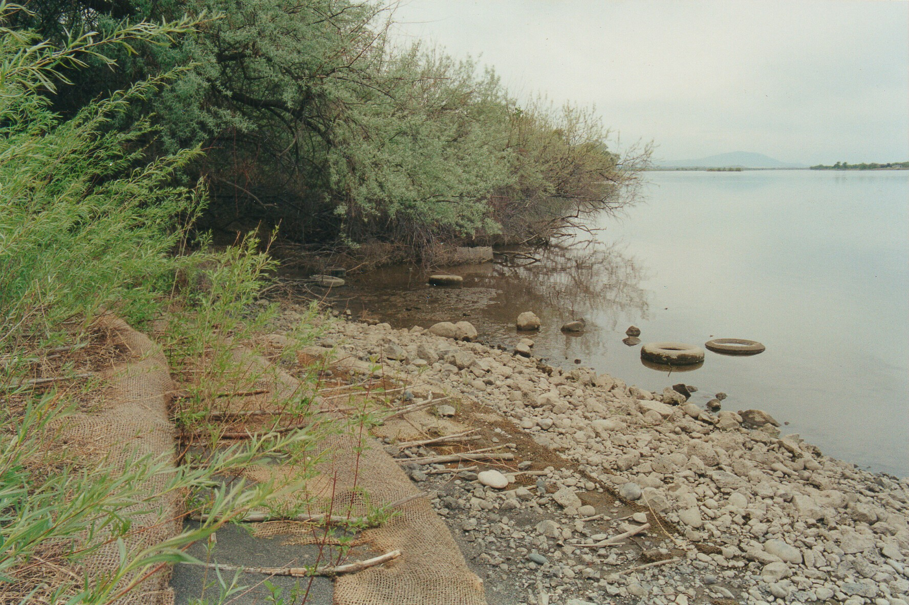
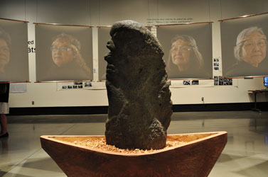
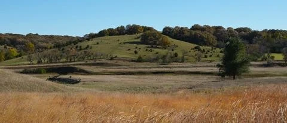

ANP491 NAGPRA
NAGPRA Project
Aidan McKeon and Melissa Teja
What is NAGPRA?
The Native American Graves Protection and Reparation Act is a federal law that requires Federal Agencies and institutions that receive fed funds to repatriate or transfer native American human remains and other culturally significant items to the appropriate parties. Cultural items include human remains, funerary objects, sacred objects, and objects of cultural patrimony. NAGPRA was enacted November 16th, 1990, by Maria Pearson, a member of the Yankton Sioux tribe of Iowa, who supported the equal treatment of all people, especially Indigenous North Americans. (US Senate Report 101-473).
The NAGPRA process goes beyond legal obligation. Repatriation is an integral ethical step towards reconciliation and restorative justice. By working with empathy and respect for both ancestors and communities, we can better support cultural continuity and facilitate overdue decolonization. Through collaborative work, we can build relationships and foster community that works towards creating a more ethical world.
This site provides a history with case study examples, and a comprehensive resource list for NAGPRA practitioners and students.
NAGPRA Compliance
The importance of NAGPRA within the United States is due to the oppression and colonization of Indigenous North Americans. Communities across the United States have felt the full impact of colonization, one key aspect of these impacts were the loss of heritage in the form of artifacts and other cultural items not being accessable and unable to be reclaimed.

History of NAGPRA
Initial Legislation
On October 26, 1990 the initial NAGPRA legislation was passed. Within this initial legislation, the bill states that if Native American artifacts or remains are found on Federal or Tribal land, then ownership would be transferred to the rightful ancestor, and if no ancestor claims the artifact(s) or remains, it goes to the associated tribe of the area.
How NAGPRA got Passed
In 1971, a highway construction project unearthed a total of 28 human remains. Within the 28 total, there were remains of 26 white pioneers, one indigenous woman, and one indigenous infant. The 26 pioneers were reburied relatively quickly, while the indigenous remains were sent to a state archeologist. Maria Pearson, a member of the Iowa Turtle Clan of the Yankton Sioux, caught wind and was furious. There was no law to protect ancient burial sites within the United States and Maria wanted to change that. Maria then staged a protest at the state capitol and requested an audience with Governor Robert D. Ray. After meeting with the Governor, the Indigenous remains were quickly reburied along with the white remains. After that Maria met with legislators, archeologists, anthropologists, physical anthropologists, and tribal members to spur legislation guaranteeing equal treatment of non-Indian and native American remains.
NAGPRA Feats
Kennewick Man
The Kennewick Man case was one of the defining moments for NAGPRA, providing justice for deceased Indigenous ancestors. In July 1996, an almost complete skeleton was found washed up on the beach of Kennewick, Washington. It is important to note that where the remains were found was on federal land. Anthropologists were called to do an evaluation after initial testing and concluding that the body was too old to be a crime. In 2015, radiocarbon dating showed that the bones were aged to be somewhere between 8,340 and 9,200 years old. After consultation with the tribes, oral history proved that the remains belonged to an ancestor, making NAGPRA applicable. Tribes requested a full stop with the investigation and asked for a reburial. In 2017 there was a private burial service for the ancestral remains.

T'xwelatse Statue
The T’xwelatse Statue is a great feat of NAGPRA, where a statue was brought home after being housed in a facility outside of tribal jurisdiction. In Indigenous history, T’xwelatse was a shaman within their community. He was turned to stone by Xa:ls, also called the great transformer. After he was turned to stone, he was moved outside of his house as a reminder to live together in a good way. In modern times, the T’xwelatse statue was taken by non-indigenous farmers, placing it into a store as a display piece. The statue was then moved to Burke Museum in Washington. After the Nooksak tribe gained federal recognition in 1973, there was push to repatriate the statue after NAGPRA was enacted. In 1992 there was a start to the attempt to repatriate the statue, and not until media pressure in 2006 was the T’xwelatse Statue given back to the Nooksack Tribe.

The site of Blood Run
The site of Blood Run is an essential case study for NAGPRA. The site is located on the Big Sioux River, Blood Run. The site was excavated by the University of Iowa and is a National Historic Landmark. The site is an affiliated Oneota site from 1200-1750 AD, featuring over 275 mounds. The DNR and State Department are working to protect this sacred site and the ancestors from looting and development. Kelsey and Carpenter (2011) published “’In the End, Our Message Weighs’: Blood Run, NAGPRA, and American Indian Identity” that outlined the impact of NAGPRA work at the site and its meaning for identity and culture. Blood Run is a site that is regarded by multiple tribes as a center for multitribal ceremonial practices and therefore requires intertribal collaboration for consultation (Kelsey and Carpenter 2011), which makes it a prime case study for tribal sovereignty and collaboration.

2023 Regulatory Update
The 2023 regulatory update to the NAGPRA law called for a deference to tribal knowledge. This removed the Culturally Unidentifiable category when reporting on NAGPRA eligible collections, which expedites the repatriation process. This change also established mandatory consent from tribes before any research undertaken on collections, emphasizing that affiliation should be determined by geographical affiliation rather than undertaking invasive research processes to determine cultural affiliation of collections. Institutions also have five years (from 2024) to update all their inventories and begin the consultation process.
Resources
There are many useful resources for NAGPRA practioners, and here we provide a list of some resources that may be useful.
- The National NAGPRA program has a comprehensive website that includes sections on Compliance, Enforcement, Law and Policy, the Review Committee, and grant opportunities to support work. NPS.gov
- Communities of Practice have also become an important resource for practitioners to share advice, resources, and have discussions about federal law. These are discussion areas between cohorts, colleagues, and tribal partners, and facilitate conversation as the law is comprehensively interpreted and consultation allows people to grow. Community of Practice
- Consultation with tribal partners is an important part of the NAGPRA process. Successful consultation has to be approached with respect. Understanding how language and connotations affect conversations is incredibly important. Arizona State University has published a guide called “Respectful Terminology Recommended for Discussion of Human Remains and Funerary Objects in Archaeological Compliance.” This guide is very helpful for facilitating respectful conversation. For example, some terminology can be very clinical when used in a research setting, and changing the language used allows for a more sensitive approach that treats the ancestors with dignity and respect. Respectful Terminology
- Some tribal partners have a guide or manual that outlines how they would like to be approached during the NAGPRA process. The Miami Tribe of Oklahoma has a website guide called that is a valuable resource for guiding the process. NAGPRA Manual
- Public institutions like the University of Georgia have published guides and policies that they have applied at their institutions. The University of Georgia
- Gaining experience in NAGPRA practice can be found through training. One training program is the Intensive NAGPRA Summer Training & Education Program, or INSTEP. This program travels to locations around the country to provide accessible training on best practices for anthropologists, tribal liaisons, and NAGPRA practitioners. INSTEP
- Communication is incredibly important during the NAGPRA process. The Native American Journalists Association has released a guide for “reporting on First Nations, Inuit and Métis communities” that outlines what information can be shared and how to navigate press releases regarding communities and NAGPRA. Press Release Guide
- YWhile facilitating repatriation, if consultation with tribal partners determines that reburial is the next step in the process, it is important to find land that is not disturbing any ancestors. One resource for non-invasive or destructive survey is using K9 dogs to detect burials and survey the landscape. KYK9 Dogs for Burial Identification & Land Survey
Current NAGPRA Compliance
NAGPRA is an ongoing issue. The National NAGPRA Program publishes current statistics on the status of various eligible collections that are going through the legal process of reporting their collections, consulting with tribal partners, and facilitating repatriation. As of 2024, there is still an incredible amount of work that needs to be done.
- The National NAGPRA program publishes statistics on the current progress of reported NAGPRA processes. These graphs are from 2024. NAGPRA Reporting
Future and International Repatriation
The repatriation process extends beyond the United States. The United Nations have adopted a Declaration on the Rights of Indigenous Peoples that acts as a basis for International Repatriation. There is a lot more work to be done to advance the return of people and cultural items to their country of origin.
Sources
Kelsey, P., & Carpenter, C. M. (2011). “In the End, Our Message Weighs”: Blood Run, NAGPRA, and American Indian Identity. American Indian Quarterly, 35(1), 56-74.
LaLonde, R. S. (2024). Tribal Relations and Nagpra: Consciousness, Connectedness, and Cause (Master's thesis, Northern Michigan University).
McManamon, F. P. (2020). Kennewick Man Case: Tribal Consultation, Scientific Studies, and Legal Issues. In Encyclopedia of Global Archaeology (pp. 6236-6247). Cham: Springer International Publishing.
Meltzer, D. J. (2015). Kennewick Man: coming to closure. Antiquity, 89(348), 1485-1493.
Schaepe, D., & Campion, D. (2007). Learning to Live Together in a Good Way: Lessons on Repatriation from Stone T'xwelatse. The Midden, 39(2), 9-17.
Yann, J., Domeischel, J., Thompson, A. R., & Schreiner, N. M. (2025). Pathways to Repatriation for NAGPRA Practitioners: Introduction. Advances in Archaeological Practice, 13(3), 357-363.
Image Sources
Image 1: Sitting Bull. c1884. photographed and published by Palmquist & Jurgens, St. Paul, Minn. Obtained on 2/17/22 from https://www.loc.gov/item/94500412/
Image 2: Chief Joseph, Nez Percé. 1900. Photographed by Gill, De Lancey. Obtained on 2/17/22 from https://www.loc.gov/item/2002719520/.
Image 1: Sitting Bull. c1884. photographed and published by Palmquist & Jurgens, St. Paul, Minn. Obtained on 2/17/22 from https://www.loc.gov/item/94500412/
Image 2: Chief Joseph, Nez Percé. 1900. Photographed by Gill, De Lancey. Obtained on 2/17/22 from https://www.loc.gov/item/2002719520/.
Image 1: Sitting Bull. c1884. photographed and published by Palmquist & Jurgens, St. Paul, Minn. Obtained on 2/17/22 from https://www.loc.gov/item/94500412/
Image 2: Chief Joseph, Nez Percé. 1900. Photographed by Gill, De Lancey. Obtained on 2/17/22 from https://www.loc.gov/item/2002719520/.